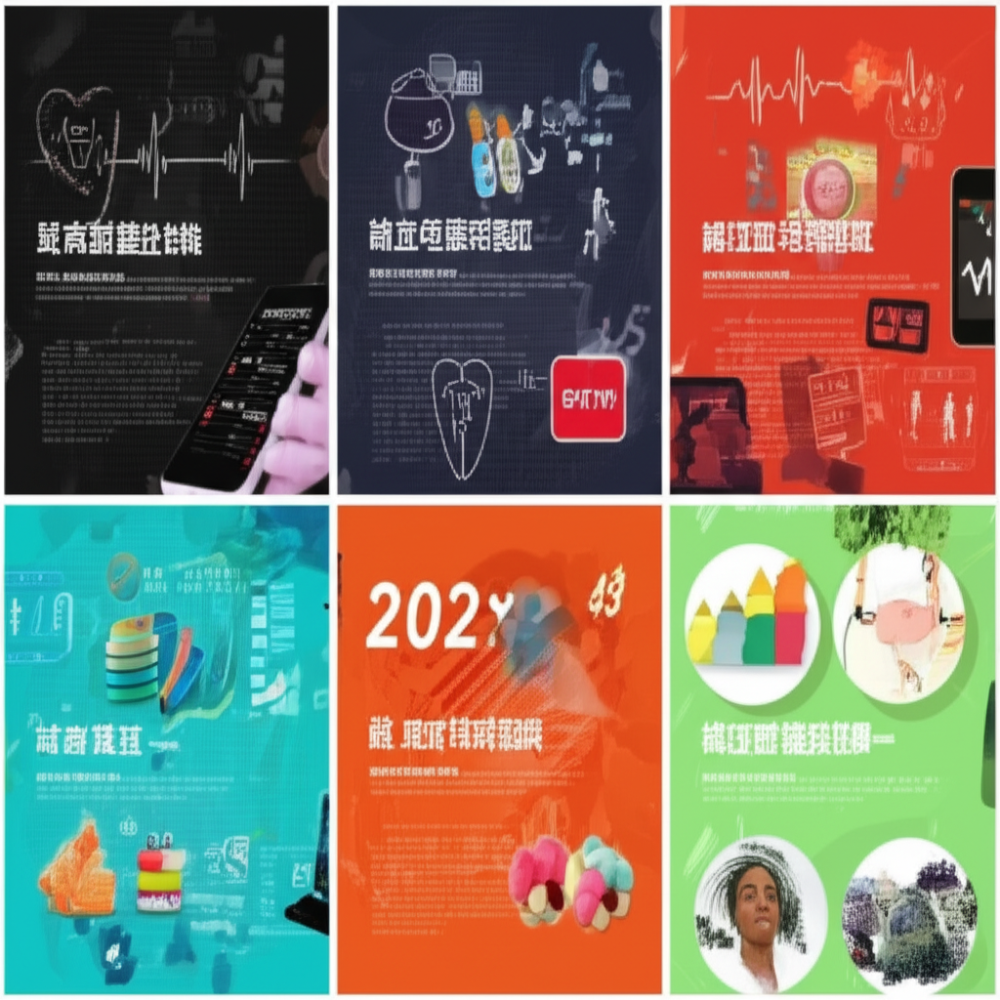

# 世界高血壓日：關注與控制，擁抱健康長壽
## 引言
每年的5月17日是世界高血壓日，旨在提高公眾對高血壓的認識，鼓勵早期發現、預防和控制，以降低相關的心血管疾病風險。2025年的世界高血壓日，各地的衛生機構和醫療單位都積極響應，舉辦宣導活動、提供健康資訊，呼籲民眾重視血壓管理，積極採取措施，達成「精准測量，有效控制，健康長壽」的目標。
## 主體內容
### 第一點：全球及本地高血壓現況與防治
高血壓是全球性的慢性疾病，也是心腦血管疾病的重要誘因。中國大陸高血壓患者人數已超過3億，但知曉率、治療率和控制率仍然偏低。澳門的高血壓患者治療率接近九成，血壓控制率也顯著提升。世界各地都積極推廣高血壓的預防和控制，包括定期量血壓、健康飲食、適度運動、戒菸限酒等。南投縣衛生局也強調「在家量血壓，722GO健康」，鼓勵民眾居家監測。
### 第二點：高血壓的精準測量與有效控制
高血壓的精準測量至關重要，影響治療策略的制定。但許多人在家測量血壓時，常常因為方法不當而導致結果不準確。因此，正確的測量方法非常重要。同時，針對高血壓的控制，除了藥物治療，飲食和生活習慣的調整也扮演重要角色。得舒飲食（DASH diet）被證實有效降低血壓。此外，桓台縣荆家鎮衛生院也舉辦高血壓日宣教活動，推廣健康生活方式。
### 第三點：高血壓控制的多元策略與最新研究
高血壓的控制需要多元策略，包括藥物治療、飲食調整、生活習慣改善等。對於難治性高血壓，手術可能是一種選擇。中國醫科大學附屬第一醫院的研究團隊，則針對農村高血壓控制項目進行研究。另外，夏天易失眠可能影響血壓，多吃蓮藕、西瓜等食物有助祛濕，改善睡眠。芭樂富含維生素C，控制血糖有利減重，亦有助於高血壓的間接控制。
## 結論
世界高血壓日提醒我們，高血壓的防治需要每個人的參與和重視。透過定期測量血壓、採取健康的生活方式、積極配合醫囑，我們可以有效地控制血壓，降低心血管疾病的風險，並最終實現健康長壽的目標。無論是個人、家庭還是社會，都應該共同努力，營造一個有利於高血壓預防和控制的健康環境。